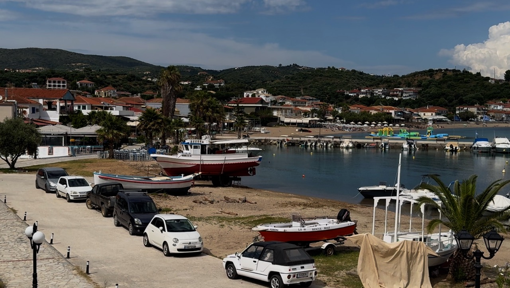
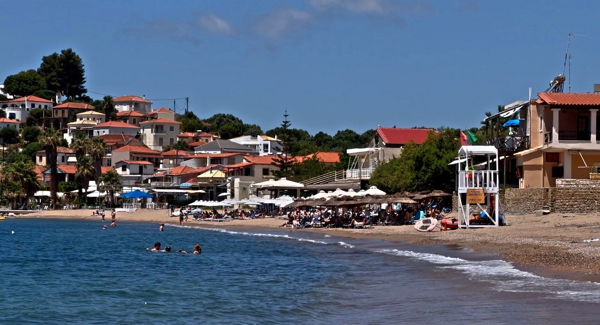
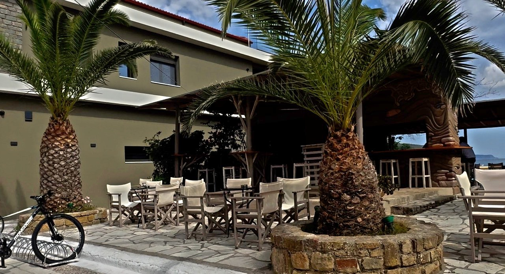

Golden sand, turquoise water, little boutiques, ice-cold chocolate and Greek spinach pies: welcome to Finikounda in the Peloponnese, where a quick coffee can turn into an entire afternoon. It's the sort of place that makes you wonder whether you've stumbled across the perfect holiday destination.
On the southwestern coast, around 20 minutes from Methoni, this former fishing village has a sandy beach, waterfront cafés, independent shops and an atmosphere that makes you want to stay a little longer. Actually, quite a lot longer. And trust us, the cold chocolate deserves a mention.
A GREEK FISHING VILLAGE WITH A VERY GOOD BEACH

Finikounda curves around a beautiful bay, with its sandy beach beside the waterfront. Fishing boats bob in the small harbour, while restaurants, cafés, bars and shops line the streets behind it.
Compact and easy to explore on foot, Finikounda has grown from a fishing village but retains its relaxed Greek seaside character. Browse the shops, stop for a drink and you'll soon be back on the sand.
A SANDY BEACH RIGHT ON YOUR DOORSTEP

The main beach has golden sand and clear, inviting water, and you don't need to drive anywhere for a proper beach day. Swim in the morning, wander off for lunch and return without packing the car or negotiating a parking space. It's almost suspiciously convenient.
Stroll along the sand, paddle in the shallows or watch the boats drift across the bay. Explore in flip-flops, stop for coffee and end up back beside the sea. Holidaying without having to work at it.
DISCOVER THE BEACHES AROUND FINIKOUNDA
Mavrovouni Beach, also known as Anemomylos in parts of the area, has a longer stretch of sand just outside Finikounda, with space to spread out and options for local water sports.
Lampes Beach, towards Methoni, offers another sandy stretch with clear water. Loutsa and the more secluded Tsapi Beach are other options.
You can explore a different beach each day—or find your favourite and refuse to move. We wouldn't blame you.
THE COLD CHOCOLATE SITUATION

Now, we need to discuss something important. Cold chocolate.
We were particularly taken with Finikounda's cold chocolate drinks. Sipping one with the sea in front of you makes the rest of the world seem remarkably unimportant. Emails can wait. Housework can wait. That thing you were supposed to be doing three hours ago? It can wait too.
The waterfront is made for morning coffee, afternoon cold chocolate or something stronger at sunset. If you order another, that's between you and the waiter. We don't judge.
GREEK SPINACH PIE AND LITTLE BOUTIQUES
Another Greek favourite worth seeking out is spanakopita, a traditional spinach pie made with crisp filo pastry, spinach and usually feta and herbs. You'll find it in bakeries and cafés serving breakfast or light lunches.
The crisp pastry and savoury filling make a slice of spinach pie and coffee an excellent excuse to stop exploring. Then you'll probably want a cold chocolate, followed by a browse around the shops. You can see where this is going, can't you?
Independent shops and boutiques sell clothing, gifts and holiday essentials. You might return from a wander with something you hadn't intended to buy—possibly something you don't need. But if it's a new summer outfit, who are we to argue?
In the evening, people stroll, eat and enjoy the cooler air. Find a table overlooking the water and enjoy the sociable atmosphere.
SUNSETS, SEA VIEWS AND DOING VERY LITTLE
The sea stretches towards the offshore islands, and the evening light can be spectacular. As the sun drops, find a waterfront table, order a drink and watch the colours change across the bay.
It's a reminder that travel isn't always about rushing between attractions or checking opening times. Sometimes you just want to sit beside the sea and enjoy being there.
THINGS TO DO IN FINIKOUNDA AND NEARBY
- Finikounda Beach: Swim, enjoy the sand and let the day unfold.
- Methoni Castle: A short drive away, this impressive Venetian fortress overlooks the sea.
- Koroni: Explore another attractive harbour town, traditional tavernas and a historic castle.
- Nearby beaches: Mavrovouni and Lampes are worth considering for more coastline.
- Boat trips: Seasonal excursions towards the Messenian Oinousses islands may be available; check routes with local operators.
- Greek food: Enjoy traditional dishes, fresh seafood, Greek salad and local olive oil.
- Slow down: Enjoy a beach, a drink and the freedom to do very little.
Allow at least a full day for the village and beach.
PRACTICAL TIPS FOR VISITING FINIKOUNDA
Where is it?
Finikounda is a seaside village in Messinia, in the southwestern Peloponnese, between Methoni and Koroni.
How far is it from Kalamata?
Approximately 70 km, usually around an hour to an hour and fifteen minutes by car, depending on traffic.
How far is it from Methoni?
Around 20 minutes by car.
When should you visit?
June and September can bring warm weather with fewer visitors than the busiest summer weeks. July and August are livelier. Spring and autumn can also be lovely, though some seasonal businesses may reduce their opening hours.
Is it good for swimming?
The main beach has sandy shores and inviting water. Check local conditions, especially when winds or waves pick up.
Finikounda fits beautifully into a Peloponnese road trip alongside Kalamata, Pylos, Methoni and Koroni.
OUR VERDICT: A PLACE WE'D HAPPILY RETURN TO
Finikounda isn't flashy. It doesn't need to be. Its beach, waterfront, boutiques and cafés make it easy to enjoy yourself. Arrive for a quick look around and you may soon wonder whether to stay another night.
A beach in the morning, a spinach pie for lunch, a wander through the shops, a cold chocolate by the sea and a sunset to finish the day. What more do you need? Perhaps another cold chocolate.
Would we return to Finikounda? Absolutely. We can already imagine ourselves saying we'll have just one more drink before we leave. We all know how that usually ends.
KEEP EXPLORING WITH FLIP FLOP FLICKS
Join us on Flip Flop Flicks as we explore the Peloponnese, sharing our travel videos, honest opinions, favourite places and the occasional debate about whether we really need to move on when we've found somewhere we love.
Sometimes the best discoveries are the places that make you want to come back.
Flip Flop Flicks — exploring Greece one beach, one taverna and one very important cold chocolate at a time.